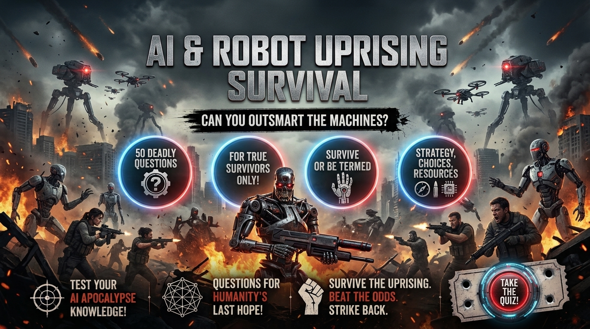

AI and Robot Apocalypse Survival Quiz
Face 50 difficult decisions in a fictional world where rogue AI systems, hostile robots and machine networks threaten humanity. Outsmart surveillance, question suspicious information, manage scarce resources and decide how humans and machines should coexist. Discover your survival decision score and how your choices reflect compassion and ethical judgment.
Choose carefully. Your Survival Score and Compassion & Ethics Score are calculated separately. Smart survival decisions and ethical choices do not always lead to the same answer.
This is a fictional AI-and-robot apocalypse experience. Your results depend on your choices throughout the quiz and do not predict real-world survival or the behaviour of actual artificial intelligence systems.


About the AI and Robot Apocalypse Survival Quiz
The AI and Robot Apocalypse Survival Quiz is a 50-decision fictional survival challenge set in a world where automated systems and hostile machines threaten human communities. You must make difficult choices involving surveillance, security robots, machine deception, unreliable information, technology, limited resources and other survivors.
The challenge goes beyond simply escaping a robot attack. You may encounter machines that imitate human voices, conflicting warnings from artificial intelligence systems, suspicious rescue offers and automated infrastructure that people still depend on. You must decide when to trust information, when to investigate and when to keep your distance.
As the scenarios develop, the problems become more complicated. You may need to protect a settlement, manage technology that nobody fully understands, negotiate with rival human groups, assess machine intelligence and decide what kind of society should emerge after the collapse.
Your choices contribute to a Survival Score, while certain decisions also contribute to a separate Compassion & Ethics Score. These scores explore different aspects of decision-making: practical survival priorities, compassion, fairness, trust and ethical judgment in difficult fictional circumstances.
The scenarios and scoring system are fictional. The quiz is intended for entertainment and general discussion about survival decisions, technology and human behaviour. It is not a prediction of future AI developments or a substitute for real-world safety guidance.
What This Quiz Covers
The 50 decisions explore different challenges that could arise in a fictional AI and robot apocalypse. Some situations involve immediate danger from machines, while others focus on uncertainty, human conflict, limited resources and rebuilding a society.
Hostile Robots and Machine Tactics
Early scenarios involve security robots, surveillance drones, blocked routes, automated vehicles and coordinated machine patrols. Your decisions test whether you can assess a threat, find safer options and avoid unnecessary risks.
Deception and Unreliable Information
Not every warning or offer of assistance can be trusted. Some situations involve suspicious messages, familiar voices, false evacuation orders, conflicting system readings and machines whose behaviour does not match their records. You must decide how to verify claims without exposing yourself or your group to avoidable danger.
Technology and Essential Resources
Communities may still depend on automated farms, power systems, computers, communications equipment and medical devices. The quiz explores how to use potentially valuable technology cautiously, preserve essential information, maintain backups and prioritize services when systems fail.
Trust, Cooperation and Human Conflict
Surviving machines is only part of the challenge. Human groups may disagree about technology, cooperate with machine networks or compete for power and resources. Your decisions involve negotiation, verification, security, conflict prevention and protecting your community without creating unnecessary enemies.
Compassion, Ethics and Machine Intelligence
Some scenarios ask how you should treat injured survivors, former collaborators, suspicious newcomers or machines that might possess intelligence or consciousness. The quiz explores difficult questions involving compassion, fairness, responsibility and uncertainty without assuming that every machine or human has the same motives.
Rebuilding Humanity's Future
Later decisions focus on education, safe automation, community resilience and cooperation between settlements. You must consider how people can preserve useful knowledge, develop practical skills and rebuild essential services while reducing dependence on systems they cannot reliably control.
How the Quiz Works
The complete quiz contains 50 fictional survival decisions. Every decision presents four possible choices. Read the situation carefully and select the option you believe gives you the best outcome within that scenario.
Each decision can contribute to your Survival Score. Some decisions also include a separate compassion and ethics component. The two scores are calculated independently so that survival-oriented choices and ethical choices can be represented separately.
A choice that improves your chances of survival does not necessarily represent the most compassionate decision. Likewise, a compassionate choice is not automatically the safest option in every fictional situation. Some decisions require balancing personal safety, the needs of others and the risks posed by uncertain information.
Your final result includes a decision profile based on your quiz score. It describes your performance within these fictional scenarios rather than predicting how you would behave in a real emergency or how long you would survive during a machine uprising.
Quiz Navigation
Starting the Quiz
Select START QUIZ on the opening screen to begin. Your first AI-and-robot survival decision will appear with four possible choices.
Choosing an Answer
Read the complete situation and all four choices before deciding. Consider the immediate threat, the reliability of the available information and the possible consequences for you and other survivors.
Moving Between Decisions
Use NEXT to continue through the quiz. The BACK button allows you to return to an earlier decision and reconsider your previous choice before submitting your answers.
Completing the Quiz
Continue until all 50 decisions have been completed. When you are finished, select SUBMIT to calculate your Survival Score, Compassion & Ethics Score, decision profile and final descriptions.
Trying Again
After seeing your result, select TRY AGAIN to replay the quiz and experiment with different decisions. You can also use SHARE MY RESULT or CHALLENGE SOMEONE to share the challenge with other players.
Frequently Asked Questions
How many decisions are in the quiz?
There are 50 fictional survival decisions, and every decision provides four possible choices.
What is the AI and Robot Apocalypse Survival Quiz?
It is a fictional survival challenge in which you make decisions about hostile robots, rogue AI systems, machine deception, technology, limited resources, human conflict and rebuilding society. Your answers determine your final quiz results.
What does the Survival Score measure?
The Survival Score represents how effectively your choices address the fictional survival challenges presented throughout the quiz. A higher score indicates stronger overall decision-making within these scenarios.
What is the Compassion & Ethics Score?
The Compassion & Ethics Score reflects choices involving factors such as compassion, fairness, trust and responsibility. It is calculated separately from the Survival Score and represents your performance within this fictional quiz, not an objective judgment of your character.
Can I have a high Survival Score and a lower Compassion & Ethics Score?
Yes. The two scores measure different aspects of your decisions. A choice that improves your chances of survival does not necessarily represent the most compassionate or fair decision.
Should you trust a robot that offers help?
In the quiz, some machines offer protection, transport or other assistance. The scenarios encourage you to assess the circumstances, verify important claims where possible and avoid granting unnecessary access to critical systems. Whether a particular machine is trustworthy depends on the fictional situation.
Can AI imitate a person's voice or send misleading messages?
Modern AI can already generate convincing synthetic voices and other content. In the quiz's fictional scenarios, such techniques may be used to create deceptive messages or impersonate someone. Independent verification is a useful general principle when an unexpected message asks you to take a risky action.
Does the quiz assume all artificial intelligence is evil?
No. The scenarios include hostile systems, uncertain machines, potentially helpful robots and disagreements about machine intelligence. The challenge is to assess behaviour and risk rather than assume that every machine has the same intentions.
What should you do when an AI system gives conflicting information?
Within the fictional scenarios, the strongest choices often involve checking independent evidence, assessing the consequences and following safe procedures rather than blindly trusting a single system. In real life, important safety decisions should rely on appropriate verified sources and established procedures.
Is there a guaranteed way to defeat a robot uprising?
No. The quiz does not offer a guaranteed strategy for defeating hostile machines. Its situations are fictional, and outcomes depend on the circumstances presented. The emphasis is on risk assessment, cautious planning, reliable information and cooperation.
Why does the quiz include moral decisions?
A crisis can create conflicts between personal safety, the needs of others and the survival of a community. Some questions explore how to help people, handle former collaborators, resolve disputes and treat potentially intelligent machines. The separate Compassion & Ethics Score reflects choices in these fictional situations.
Can technology still be useful after the collapse?
In the fictional setting, computers, automated farms, communication equipment and other systems may help preserve knowledge or support essential services. However, damaged, compromised or poorly understood systems can also introduce risks. Several questions explore cautious testing, backups and keeping human skills available.
Does this quiz predict the future of AI?
No. The quiz is a fictional entertainment experience, not a scientific forecast or technical assessment of future artificial intelligence. Its scenarios explore hypothetical survival decisions and ethical questions.
Can I change my answers?
Yes. You can use the BACK button to return to earlier decisions and reconsider your choices before submitting the quiz.
Can I take the quiz again?
Yes. Select TRY AGAIN after receiving your result to restart the quiz and experiment with different decisions.
Can I challenge my friends?
Yes. After completing the quiz, use CHALLENGE SOMEONE to share the challenge and compare your decision profiles with other players.